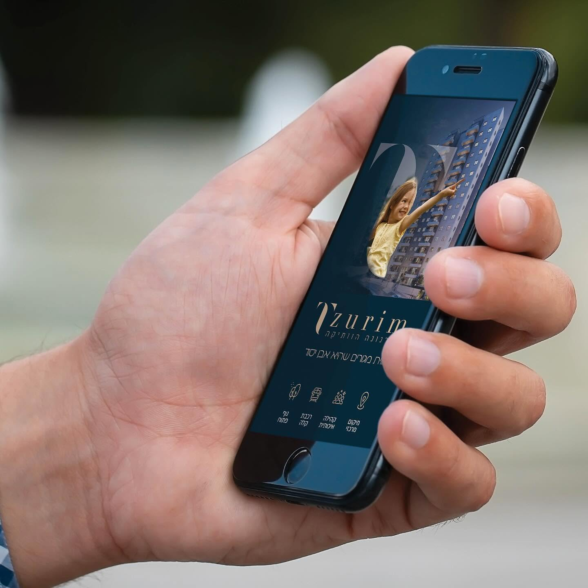
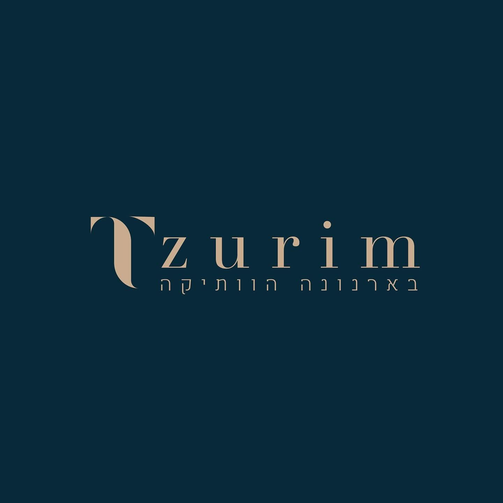
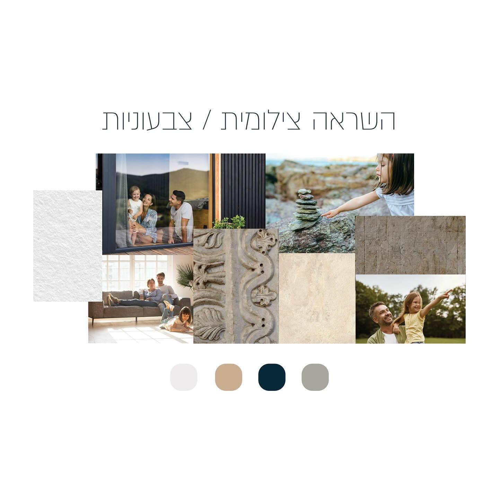
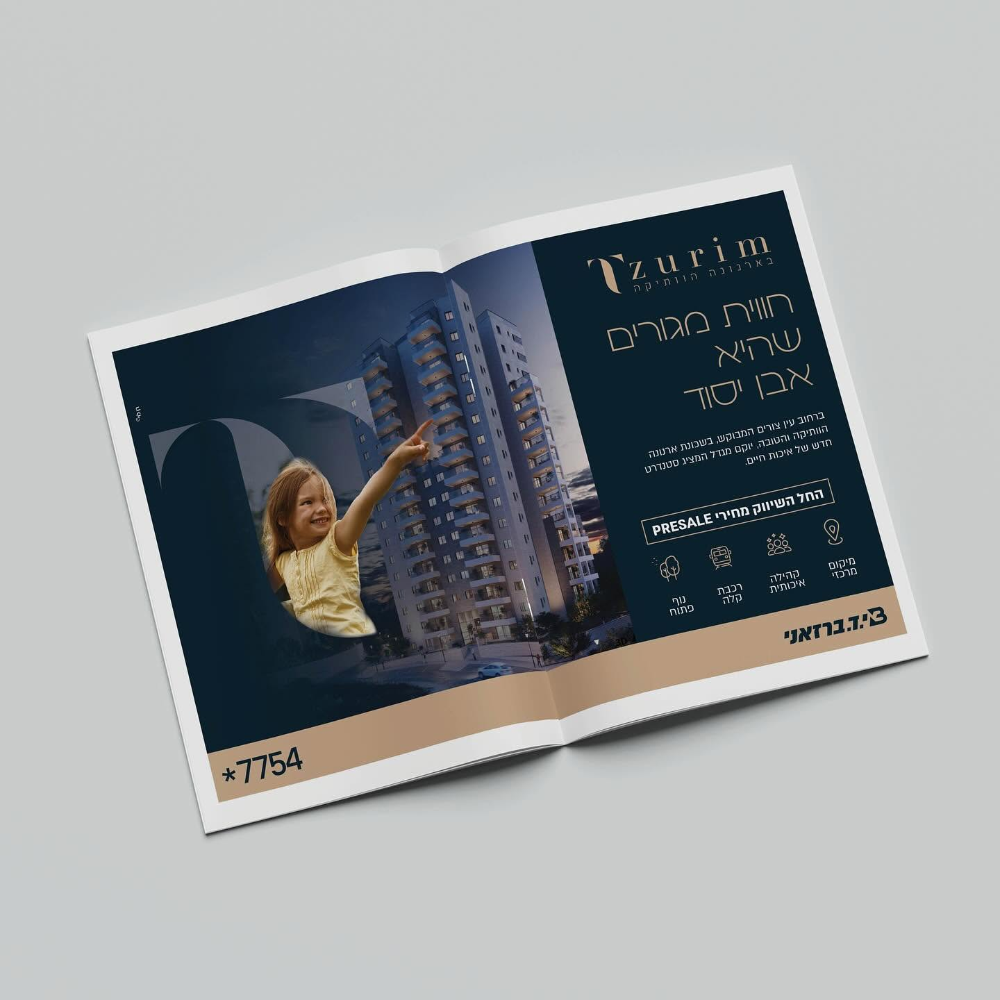
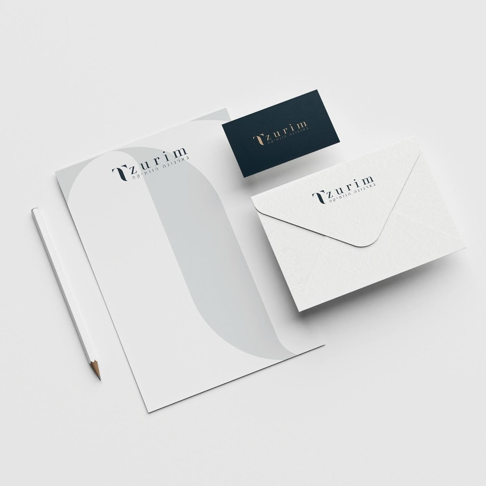
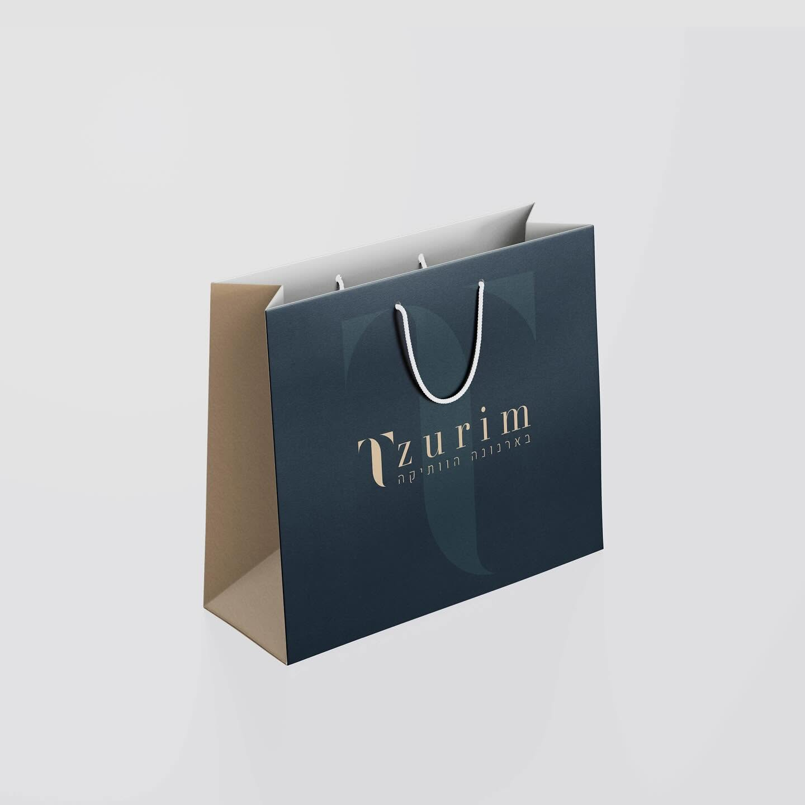
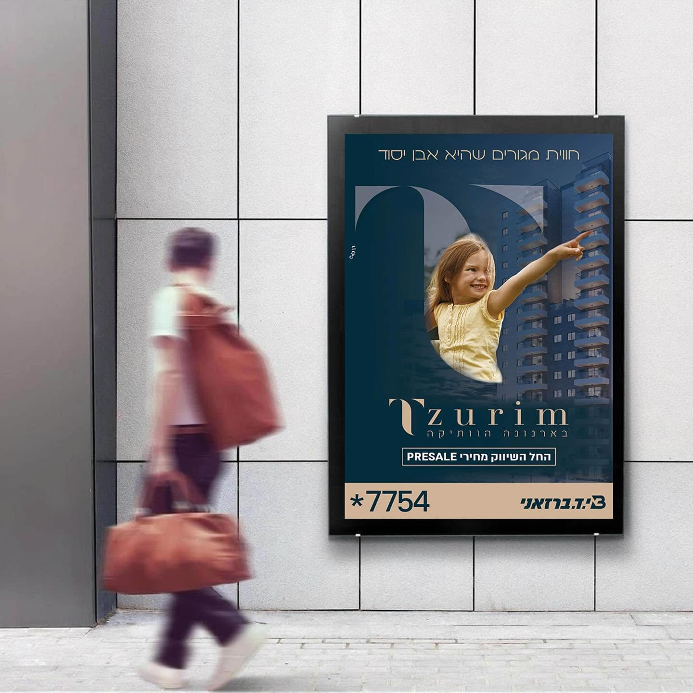
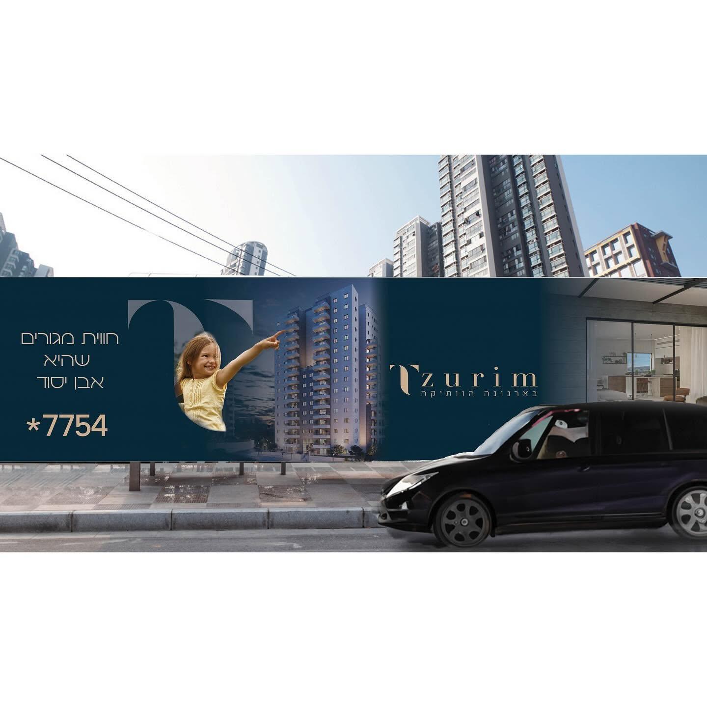

TZURIM.
״חווית מגורים שהיא אבן יסוד״. מותג למגדל מגורים בארנונה הוותיקה — סימן שנבנה מאות T מקושתת, פלטה של כחול לילה וחול, וסיפור שמחבר בין משפחה, שכונה ובית.

01 /THE IDEA
אבן אחת.
שפה שלמה.
הקשת של האות T חוזרת בכל נקודת מגע: כחלון שדרכו רואים את המגדל, כצורה גדולה על הניירת, וכרקע שקט לשקית ולכרטיס הביקור. כך כל חומר מזוהה מיד, גם בלי שם.







